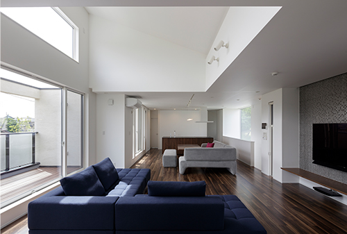
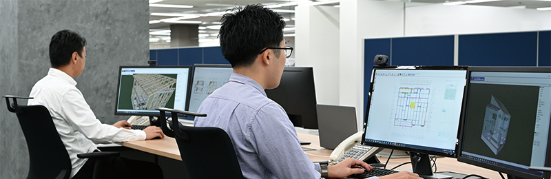

実際の暮らしを訪ねて
実際の住まいで、
広がりを見てみる。
高い窓からの光と、リビングの先のバルコニー。
J様邸では、勾配天井を生かした開放的な2階リビングを実現しています。

広さの先にある、
家族の過ごし方。
窓辺でくつろぎ、バルコニーで風を感じる。開放的な空間の使い方を、実例で見てみませんか。
この住まいの実例を見る ↗実現できる間取り・開口・天井高さなどは、プランや地域、敷地条件によって異なります。
空間を支える部材
木の家に、
鉄の強さを。
参考CG。形状・仕様は部位によって異なります。
建物全体で確かめる
一棟ずつ、
構造計算。
間取りと建つ場所に合わせて、かかる力と支え方を確かめます。

01
どんな力がかかる？
建物や家具の重さ、地震、風、雪。住まいに加わる力を条件に合わせて計算。
02
どこで支える？
梁や柱、壁などに力がどう伝わるか。部材と配置を、建物全体で確認。
03
確かめた結果を残す。
構造計算書と構造計算保証書を発行。計算結果と計算方法を保証します。
構造計算保証書は、地震による無被害を保証するものではありません。
構造計算の考え方を詳しく見る ↗見えないところにも、工夫を
強い部材を、
確かなつながりへ。
参考CG。内部は切断・透視で表現しています。
「この窓とリビング、
うちの敷地なら
どうつくれるかな。」
もっと遊びたい方へ